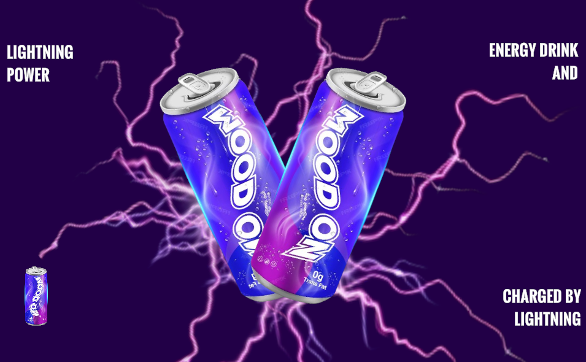
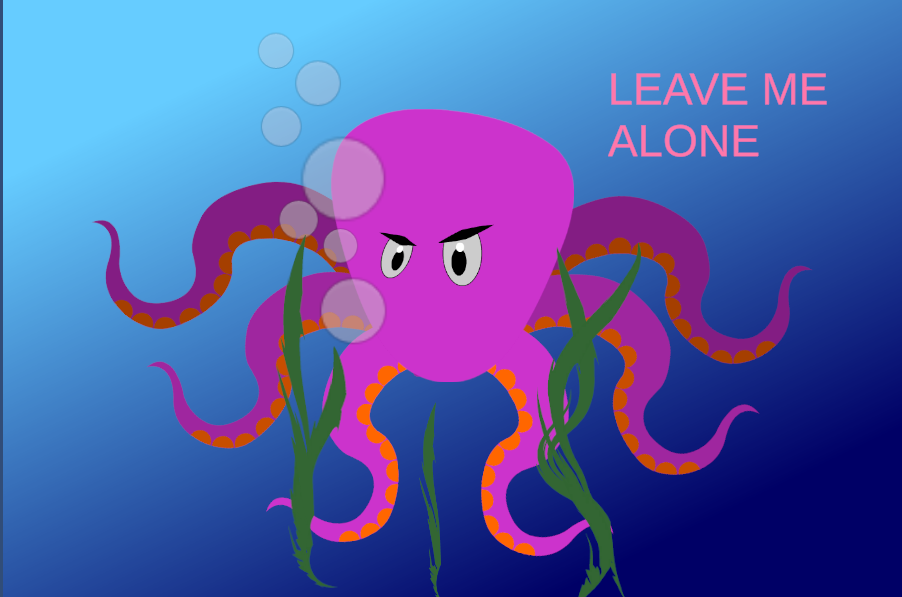
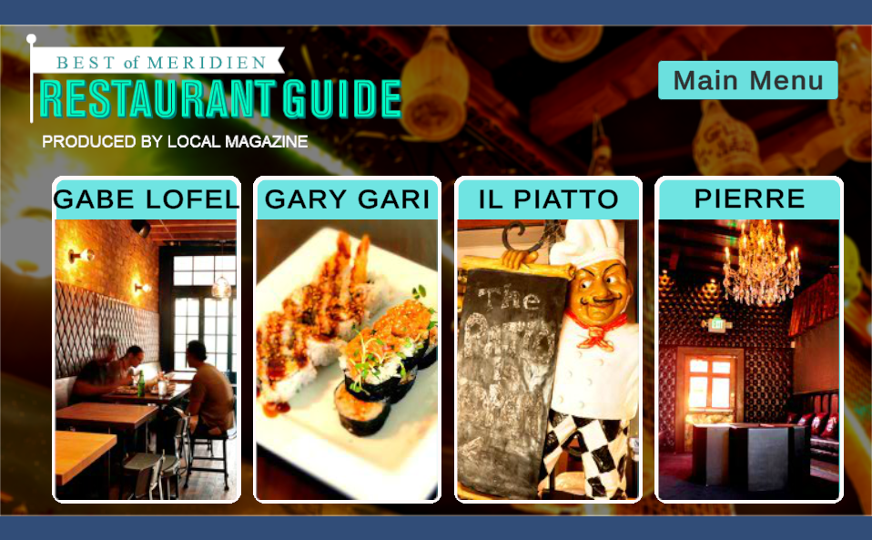
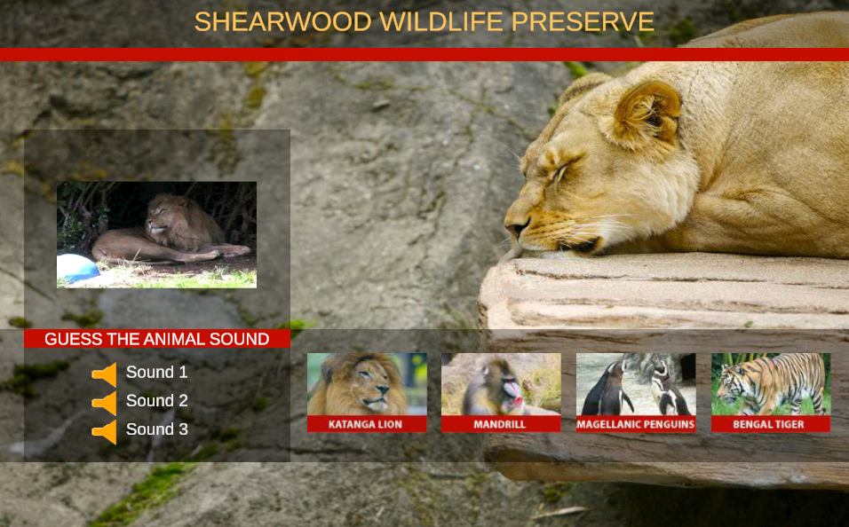
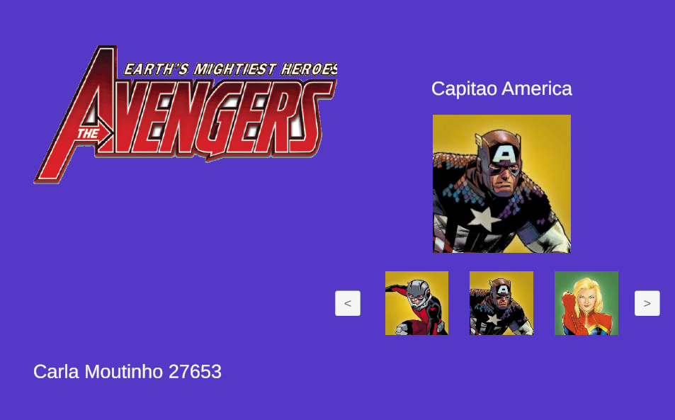

💻 Ficha 2
Projeto individual desenvolvido em Unity, centrado na exploração de animações e transições visuais, permitindo o aparecimento e desaparecimento dinâmico de imagens.

Projeto individual desenvolvido em Unity, focado na exploração de elementos visuais, composição gráfica e apresentação interativa de conteúdos.
Projeto individual desenvolvido em Unity, focado na criação de conteúdos interativos e visuais no âmbito da unidade curricular.


Trabalho individual desenvolvido em Unity, focado na exploração inicial de conceitos interativos e desenvolvimento de aplicações multimédia.
Projeto individual desenvolvido em Unity, centrado na exploração de animações e transições visuais, permitindo o aparecimento e desaparecimento dinâmico de imagens.

Trabalho desenvolvido em Unity com foco na implementação de animações interativas, explorando movimentos, transições e efeitos visuais aplicados a elementos gráficos.
Foi desenvolvida uma aplicação interativa denominada Restaurant Guide, permitindo ao utilizador explorar diferentes restaurantes através de uma interface visual intuitiva. A aplicação apresenta imagens, informações detalhadas dos espaços, categoria, horário de funcionamento, contactos e descrição do restaurante.


Desenvolvimento de uma aplicação multimédia educativa relacionada com animais selvagens, permitindo ao utilizador interagir com imagens e sons dos animais.
Foi criada uma aplicação temática baseada nos Avengers, permitindo ao utilizador navegar entre personagens e visualizar informações associadas.

Desenvolvimento de um quiz interativo para testar conhecimentos do utilizador através de perguntas de escolha múltipla.


Projeto individual desenvolvido em Unity, baseado na criação de um jogo de puzzle, promovendo a interação do utilizador através de desafios de lógica e organização visual.


Trabalho desenvolvido em Unity focado na criação de um jogo interativo de apanhada, explorando mecânicas de movimento, interação e dinâmica de jogo.


Projeto individual desenvolvido em Unity, centrado na criação de um jogo da memória, estimulando associação visual, atenção e interação do utilizador.